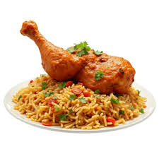

Riz
Home
Image
Image d'un delicieux plat de riz

Description
Cette recette est un plat de riz au gras bien assaisonne avec une cuisse de poulet.
Ingredients
- Riz
- Huile
- Viande de poulet
- Tomate en boite
- 7 epices
- Sel
- Legumes
- ...
Etapes
- Couper les legumes
- Faire la marinade
- Mariner les morceaux de viande
- Mettre la marmite avec un peu d'huile au feu
- Frire les morceaux de viande 30min apres la marinade
- Renverser la tomate en boite accompagner des epices et mijauter le melange
- Mettre le riz dans le melange
- Ajouter de l'eau et mijauter puis fermer la marmite
- Apres 30min de cuisson ajouter les morceaux de viande